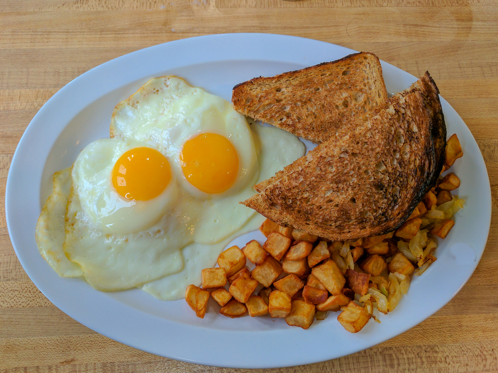

Potatoes and Eggs

For this simple recipe, we'll be making potatoes and eggs to start the day off right! It's a classic served in every breakfast restaurant wherever you go!
Ingredients
- Chopped up potatoes
- Eggs
- Oil or butter
- Lawry's Seasoned Salt
- Salt and Pepper to taste
Steps
- Heat up pan on medium-high stove, then add desired amount of oil or butter to pan
- Add chopped potatoes to pan, and season with Lawry's Seasoned Salt
- Cook potaotes to desired level of crispyness
- Remove potatoes and add desired amount of eggs to pan
- Cook eggs unscrambled, and flip when the bottom starts turning brown
- Remove eggs 20 seconds after flipping them, and enjoy!